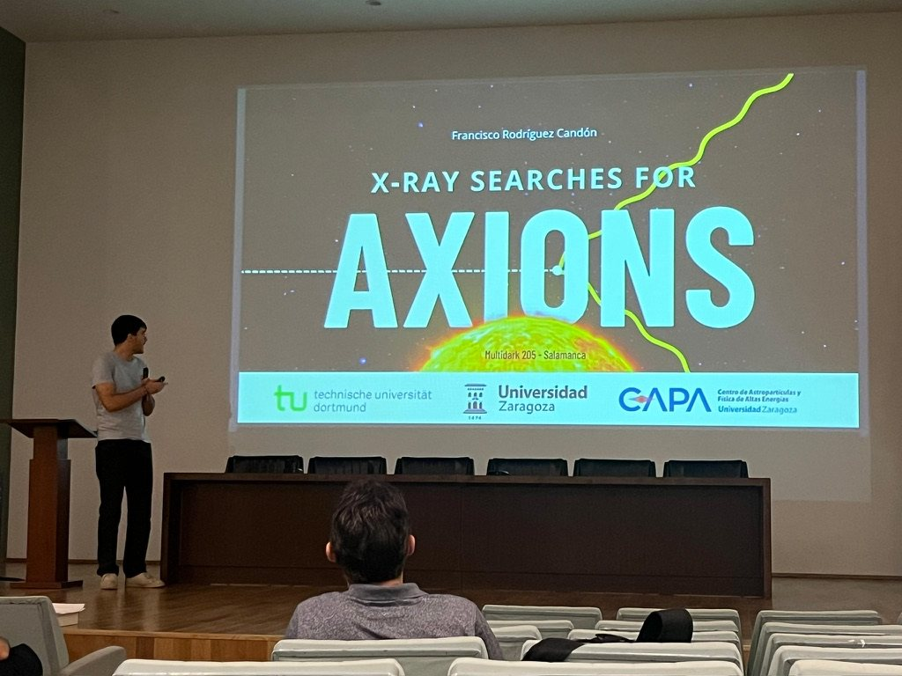
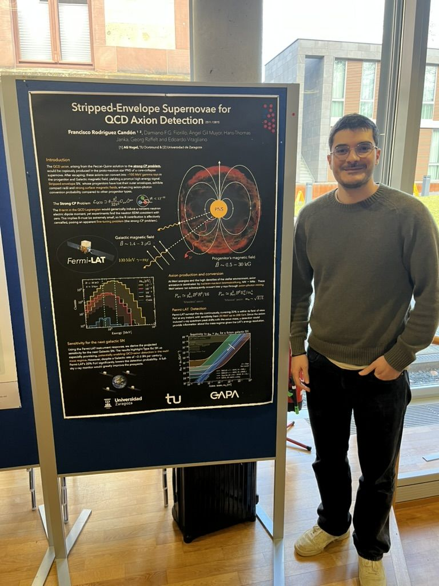

Jun
QCD axions from stripped-envelope supernovae
4th COSMIC WISPers Training School, Corfu Summer Institute · Corfú, Grecia

Dónde he presentado este trabajo.
Workshops, escuelas de formación y reuniones de colaboración por toda Europa. Dos de las charlas fueron invitadas, una abrió un workshop y un póster sobre supernovas de envoltura despojada ganó el premio al mejor póster en Bad Honnef.
Invítame a dar un seminarioJun
4th COSMIC WISPers Training School, Corfu Summer Institute · Corfú, Grecia
Jun
16th International Workshop on the Identification of Dark Matter (IDM 2026) · Zaragoza, España
Mar
DPG Spring Meeting, Section Matter and Cosmos (SMuK) · Erlangen, Alemania
Ene
Physics School “Unifying view on cosmic interacting matter” · Bad Honnef, Alemania · Premio al mejor póster
Dic
Saturnalia 2025 Workshop · Zaragoza, España
Nov
COST Action COSMIC WISPers, reunión mensual del WG3
Sep
COSMIC WISPers CW3 Training School, LAPTh · Annecy, Francia
May
2nd UNDARK School “The multi-messenger non-thermal universe” · Benasque, España
Jul
COST Action COSMIC WISPers, 3rd General Meeting · Sofía, Bulgaria
Abr
22nd MultiDark Meeting · Salamanca, España

